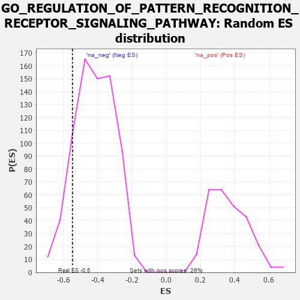

| | | Dataset | 7d |
| Phenotype | NoPhenotypeAvailable |
| Upregulated in class | na_neg |
| GeneSet | GO_REGULATION_OF_PATTERN_RECOGNITION_RECEPTOR_SIGNALING_PATHWAY |
| Enrichment Score (ES) | -0.54781127 |
| Normalized Enrichment Score (NES) | -1.3121097 |
| Nominal p-value | 0.12789115 |
| FDR q-value | 0.46351808 |
| FWER p-Value | 1.0 |
Table: GSEA Results Summary
 Fig 1: Enrichment plot: GO_REGULATION_OF_PATTERN_RECOGNITION_RECEPTOR_SIGNALING_PATHWAY
Fig 1: Enrichment plot: GO_REGULATION_OF_PATTERN_RECOGNITION_RECEPTOR_SIGNALING_PATHWAY
Profile of the Running ES Score & Positions of GeneSet Members on the Rank Ordered List
| PROBE | GENE SYMBOL | GENE_TITLE | RANK IN GENE LIST | RANK METRIC SCORE | RUNNING ES | CORE ENRICHMENT | | 1 | IRF4 | | | 2054 | 0.298 | -0.2252 | No |
| 2 | C1QBP | | | 2189 | 0.278 | -0.2113 | No |
| 3 | TLR1 | | | 2517 | 0.224 | -0.2276 | No |
| 4 | PUM2 | | | 2627 | 0.209 | -0.2182 | No |
| 5 | DDX3X | | | 3388 | 0.091 | -0.3037 | No |
| 6 | SARM1 | | | 3432 | 0.086 | -0.2996 | No |
| 7 | GFI1 | | | 4168 | -0.037 | -0.3879 | No |
| 8 | RTN4 | | | 4783 | -0.154 | -0.4480 | No |
| 9 | PDPK1 | | | 5043 | -0.207 | -0.4577 | No |
| 10 | TLR2 | | | 5761 | -0.395 | -0.5041 | Yes |
| 11 | TKFC | | | 5854 | -0.419 | -0.4693 | Yes |
| 12 | FLOT1 | | | 6276 | -0.564 | -0.4599 | Yes |
| 13 | BIRC3 | | | 6366 | -0.603 | -0.4043 | Yes |
| 14 | PTPRS | | | 6646 | -0.738 | -0.3577 | Yes |
| 15 | UFD1 | | | 7157 | -1.040 | -0.3068 | Yes |
| 16 | XIAP | | | 7947 | -3.696 | 0.0030 | Yes |
Table: GSEA details [plain text format]

Fig 2: GO_REGULATION_OF_PATTERN_RECOGNITION_RECEPTOR_SIGNALING_PATHWAY: Random ES distribution
Gene set null distribution of ES for GO_REGULATION_OF_PATTERN_RECOGNITION_RECEPTOR_SIGNALING_PATHWAY